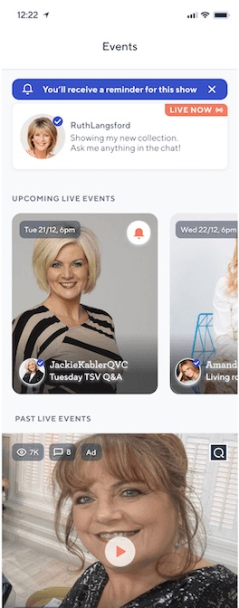
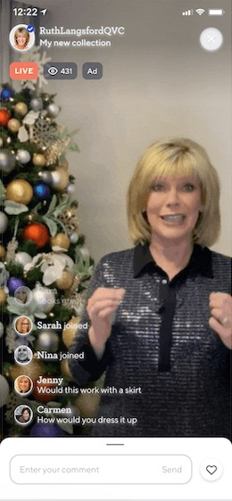

QVC Group
Livestreaming via Qurio App
(Presenter, Viewer and Moderator Flow)
Background
Create a livestreaming feature on the Qurio App
I designed a live shopping experience for QVC's social media app, Qurio, enabling creators to livestream product reviews, interact with viewers in real time, and answer questions directly. This feature supports presenter, viewer, and moderator roles, aligning with QVC's objectives to increase engagement, dwell time, and drive traffic back to the main site.



- Upcoming Live-stream widget — Upcoming live-streams are prioritised on the home screen so users know when they are happening
- Live-stream — Users can set up notifications for when live-streams start, so they can participate and ask questions
- Chats in Live-Streams — Users can give reactions or comments during the live-stream
Visual hierarchy tradeoffs (Problem)
The majority of our mature users have smaller screen-size phones
The average age of our users is 40–60; for their age group we increased the font size for better accessibility. To reduce cognitive load, we need to carefully consider button sizes and prioritize key features on the interface, making it easier for users to watch, ask questions, and interact with the host seamlessly.

Insights from user research (Host)
Hosts understood the logic of the live-streaming instantly
User interview with the host, from a host perspective, mainly testing:
- Could she understand the sequence for starting a livestream, and creating a thumbnail when the livestream has ended?
- Could she navigate across the features seamlessly during the live-streaming?
- Could she read all the comments that come through during the live-streaming? (Accessibility issue)

Insights from user research (with potential viewers)
Received positive / neutral comments on QVC presenters / guest involvement
Tested with 5 potential viewers. Mainly tested on:
- Could viewers understand the different types of badges, such as 'Ad', 'Live now', 'Qurio', 'live event recording', 'live now' and 'blue tick'?
- Could users understand if the cards are interactive? How useful are the 'reminder bells' 🔔 to them?
- What are viewers' interactions when they see the 'live now' banner, and what will their next steps be?
What user testing surfaced
- For upcoming live streams consider adding native functionality to add the reminder directly to users' device calendars
- For upcoming events, some participants missed more information on Special Value (TSV) items that will be featured in these live events
- 85% of the badges were understood by viewers
Timeline
Eight sprints across two months, in a team of five, with research running alongside design rather than ahead of it — the badge and reminder findings landed early enough to change what shipped.

Results
First livestreaming was a success
We emailed users and sent notifications ahead of the livestream, resulting in 32% of our user base joining the event. As expected, 13% of viewers submitted questions during the stream, while 74% engaged by using the 'hearts' feature to show support for the host.
32%
of the user base joined
13%
submitted questions
74%
used hearts
85%
badge comprehension
Retrospective
🪚 Trade-off
Letting go of a validated solution is never easy for a designer—especially when it feels like the best approach. However, smaller screen sizes significantly impact how users interact with content, which meant we had to carefully prioritize the most valuable features for both users and the business. This, combined with technical constraints, sparked a heated discussion around trade-offs.
♟️ Consider for scalability
While organizing features by priority, I was concerned that the livestream interface might not support all desired functionality and could limit future scalability. To address this, I worked closely with the PM to explore potential capacity for future features and ensured the design remained flexible and adaptable for future iterations.
🚦 Alignment
With many stakeholders involved and substantial technical debt, I approached the project systematically—breaking down the logic step by step, validating feasibility with developers, and keeping all teams aligned through thorough documentation and clear communication.